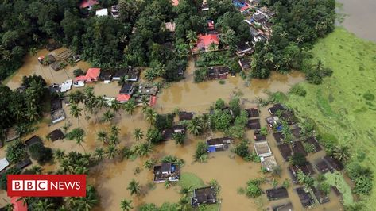

places must visit

rock fort temple
ancient temple built by the pallavas in the 8th century.
The temple complex has three shrines, two of which are dedicated to Lord Ganesha, one at the foot and the Ucchi Pillayar Temple at the top, and the Thayumanavar Temple between them. The Thayumanavar temple, the largest of the three, houses a shrine for Amman (the Goddess) as well as the main deity. The Rockfort is visible from almost every part of the city's north. The Teppakulam at the foot of the Rockfort is surrounded by bazaars. It has a mandapa at its centre and has facilities for boat riding. All the temple related float festivals are held in the tank.
Dr. A.P.J. Abdul Kalam Memorial
APJ Abdul Kalam memorial in Rameswaram
We visited the memorial of former President and great scientist Dr APJ Abdul Kalam. Built by the Defence Research and Development Organisation (DRDO), the memorial reflects India's ethnic diversity and rich cultural heritage. As you enter the memorial, the entrance depicts the India Gate and has a Chettinad door integrated into the structure. The main dome of the building is a replica of the Rashtrapati Bhavan. The memorial houses a life-sized bronze statue of the legendary scientist. Visitors can also see replicas of rockets and missiles that Dr Kalam worked on. The memorial has four halls that provide a deep insight into the life and time of the late scientist through various exhibits, which also include a few personal belongings of Dr Kalam. The memorial lies a stone's throw from Rameswaram and makes for an interesting visit.

turtle hatchery and boating
visited the turtle hatchery and sailed on the boat in the rekawa beach
We visited a turtle hatchery near the rekwa beack. We got to see little baby turtles hatching from the eggs. The eggs were actually burried in the sand untill the eggs hatch and once the turtle comes out, it is put in a big tank filled with water. There were so many tanks with turtles of different sizes and some were of different shapes too. There were some rare species of turtles too. After the hatchery, we went to the rekawa beack. It was around 4 at that time. We went on a ship, obviously with a experiencesd guide. The ship had a transparent glass at the bottom so we can see the sea creatured. Soon as we left a rain started approaching, so we decided to head back :(
review on the movies

Movie not upto the book series.
Saw the movie recently. I have read the percy jackson and the olympians book series, compared to that, the movie was not upto the books. There were many differences from the book, many details were missing(like Annabeth's Yankees cap,etc...)Overall was a good movie but I don't think those who have read the books would like it.

Wonderful sci-fi movie.
Watched the movie in prime video.Wonderful science fiction movie. The whitespikes were so realistically shown in the graphics. Really felt like in the place. Nice concept, that relates with today's climate change.

Amazing remake
Amazing remake of the olden classic Aladdin!!! The songs were really colourful and lively. Wonderful cast too.
news about environment
-
Kerala daily wager's daughter cracks UPSC, secures 481 rank
THIRUVANANTHAPURAM: S Aswathy, daughter of a construction labourer in Thiruvananthapuram, never thought she would clear the UPSC examination as it was her fourth attempt. She has secured 481st rank in the UPSC examinations which was held in 2020 which made proud of her parents who settled at Karikkakom here. However, she has not given up her urge towards her dream of becoming an IAS officer. She is currently preparing for the prelims of this year's UPSC examination scheduled for October 10. "Though I am happy that I cleared the examination, I may get IRS (Indian Revenue Service). As my dream is to become an IAS officer, I am preparing for the upcoming UPSC examination, " Aswathy told TNIE.
-
Monsoon fury on God's own country: Hundreds displaced after Kerala rains
Severe flooding in the southern Indian state of Kerala has killed at least 370+ people in the past week.
Kerala Chief minister Pinarayi Vijayan has called this current flood “the worst monsoon disaster since 1924."
Following torrential monsoon rains, many cities had totally become submerged under water. God's own country saw massive destruction, loss of property and precious lives. Now that the flood water is receding, we know it is going to be a long way to recovery and rebuilding of the state. Kerala is left with collapsed buildings, unlivable conditions in houses that stayed intact with swamp-like dirt infested with disease-borne conditions. While the people of Kerala have all come together, united to rebuild their lives, with optimism and perseverance, they still need a lot of YOUR HELP AND SUPPORT!
Books
Bill Gates
Reading is still the main way that I both learn new things and test my understanding.
List of Books
The Giver

The boy in the stripped pyjamas
The boy in the stripped Pyjamas
Bruno is the eight-year-old son of the commandant at a concentration camp during World War II. His friendship with a Jewish boy he meets across the fence leads to unexpected consequences.
BEST BUY LINK
Percy Jackson and the olympians